Раньше, чтобы карточка красиво «уезжала» вниз, когда в неё добавляли ещё одну строку текста, дизайнеры двигали всё руками, пиксель за пикселем. Автолейаут решает эту проблему — это, пожалуй, один из самых важных инструментов в современной Фигме, и сегодня целиком посвящаем ему урок.
План урока
- Проблема, которую решает автолейаут
- Превращаем фрейм в автолейаут
- Направление: горизонтально / вертикально / wrap
- Отступы: Padding и Gap
- Выравнивание содержимого
- Hug contents / Fill container / Fixed size
- Вложенные автолейауты
- Живой пример: собираем кнопку с иконкой
- Итог + домашнее задание
1. Проблема, которую решает автолейаут
Представьте карточку товара: картинка, название, характеристики товара. Если название стало длиннее и заняло две строки вместо одной — без автолейаута характеристики товара «наедут» на название, потому что все объекты стоят на фиксированных координатах. Автолейаут заставляет элементы вести себя как в вёрстке сайта: подвинулся один — подвинулись и все, что после него.
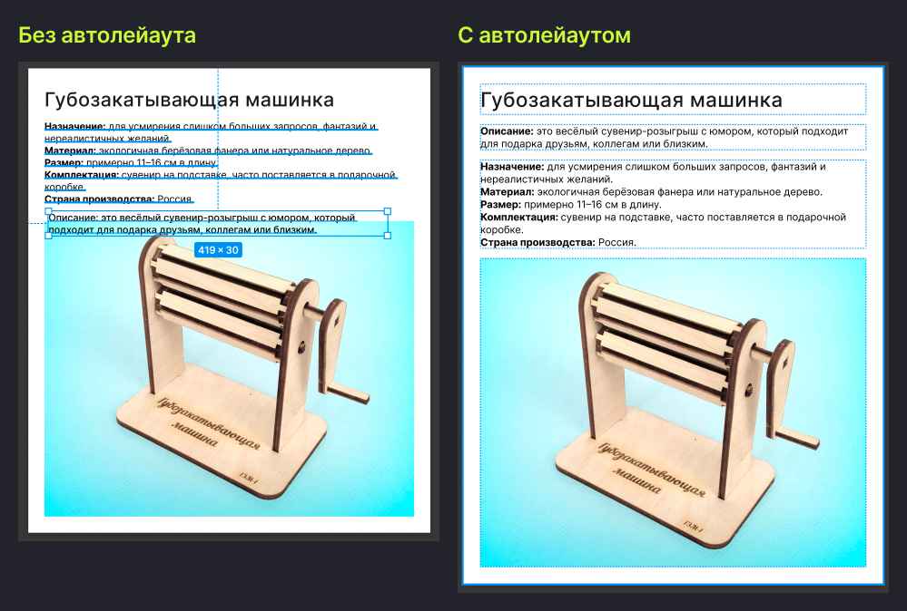
2. Превращаем фрейм в автолейаут
Выделяем нужные объекты → Shift+A (или правой кнопкой → Add auto layout). Figma создаёт фрейм-контейнер, который автоматически расставляет выделенные объекты друг за другом и следит за их положением дальше.
Можно применить автолейаут и к уже существующему фрейму, и добавлять его слоями — автолейаут внутри автолейаута (об этом ниже).
3. Направление: горизонтально / вертикально / wrap
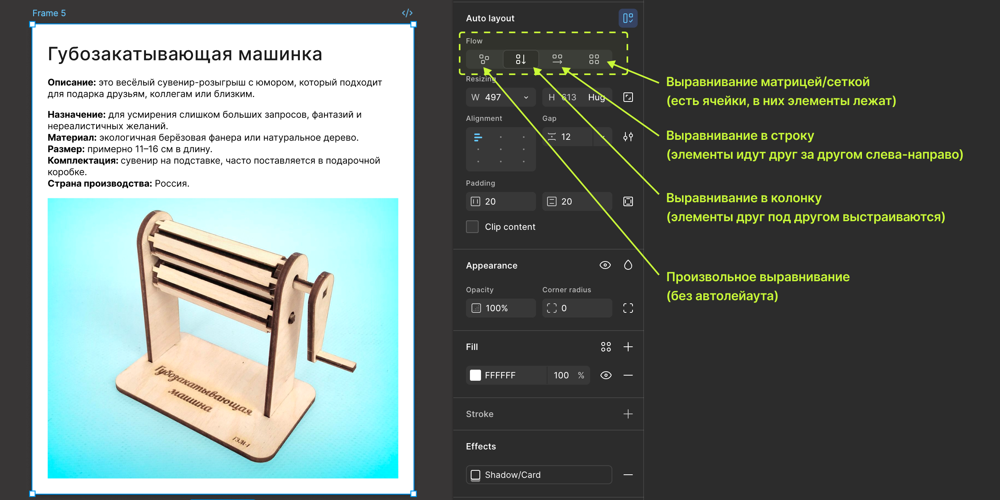
На панели Design у автолейаут-фрейма есть переключатель направления:
- Vertical — элементы идут друг под другом (типично для карточек, списков). На картинке выше как раз такое направление;
- Horizontal — элементы идут в ряд (типично для кнопок с иконкой, панелей тегов);
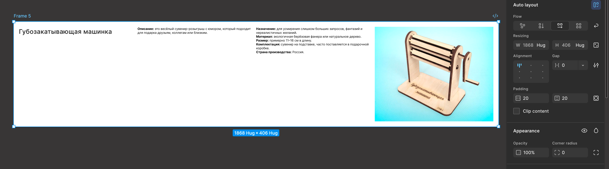
- Wrap — элементы идут в ряд, но при нехватке места переносятся на новую строку (типично для облака тегов, используется).
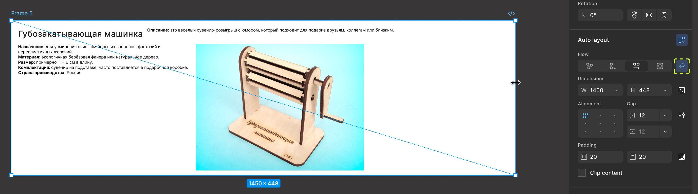
- Grid — элементы выстраиваются в ячейки, как в таблице. Настроить можно любое количество колонок и строк справа на панели.
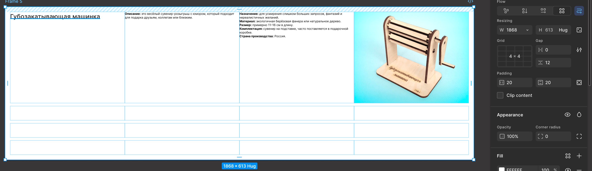
4. Отступы: Padding и Gap
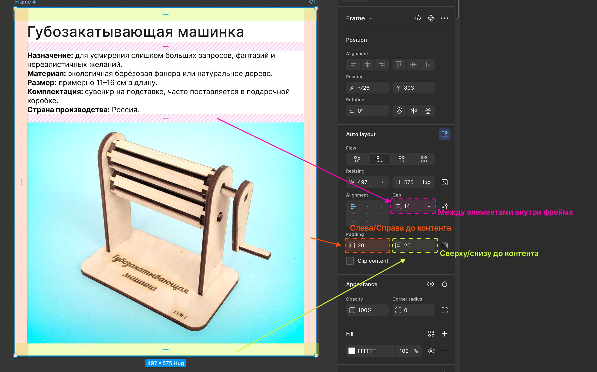
- Padding — внутренние отступы автолейаут-фрейма от края до содержимого, можно задать по каждой стороне отдельно или все сразу.
- Gap (Item spacing) — расстояние между самими элементами внутри автолейаута.
Именно эти два параметра чаще всего берутся из системы отступов (spacing scale) дизайн-системы — обычно кратно 4 или 8px (4, 8, 12, 16, 24, 32...). Использование одной шкалы отступов на весь продукт — то, что делает интерфейс визуально ровным и «дышащим» одинаково. Чуть засвечу токенов на отступы из рабочих макетов:
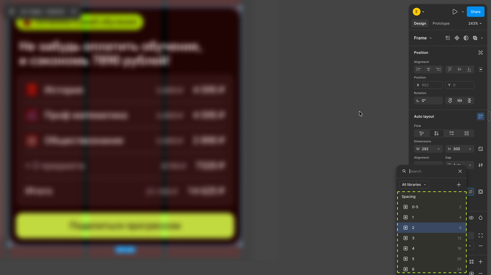
5. Выравнивание содержимого
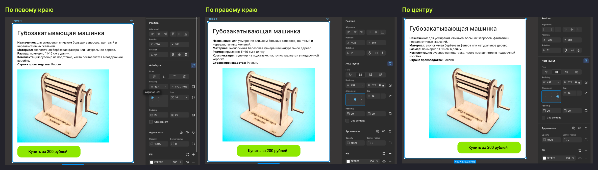
Небольшой квадрат с девятью точками задаёт, как элементы выравниваются внутри автолейаута по обеим осям сразу — например, по центру, или прижаты влево-сверху. Это заменяет ручную расстановку align left/right/center, которой пользовались в старых версиях Фигмы.
Важно заметить, что выравниваются только элементы внутри фрейма, не путайте с выравниванием текста — это в настройках текстового блока.
6. Hug contents / Fill container / Fixed size
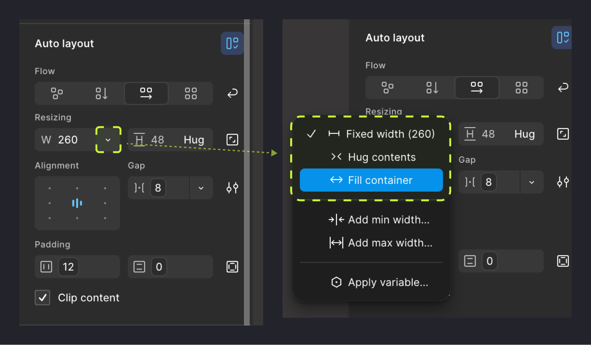
Это ключевая тема урока, разбираем подробно. У самого автолейаут-фрейма и у каждого элемента внутри него по каждой оси (ширина/высота) можно выбрать:
- Hug contents — размер фрейма равен размеру содержимого плюс padding, растёт и сжимается вместе с контентом (типично для кнопки — она ровно по размеру текста);
- Fill container — элемент растягивается на всё доступное место внутри родителя (типично для полей ввода на всю ширину экрана);
- Fixed size — размер задан вручную и не меняется (типично для иконок фиксированного размера).
Практическое правило: кнопка — Hug по ширине (растёт вместе с текстом), поле ввода в форме — Fill (тянется на всю доступную ширину), иконка — Fixed (не меняется никогда).
7. Вложенные автолейауты
Автолейауты можно вкладывать друг в друга неограниченно: карточка (Vertical) → внутри строка с рейтингом (Horizontal) → внутри неё иконка звезды и число. Так собирается практически любой сложный интерфейс — не единой плоской структурой, а деревом вложенных автолейаутов, где каждый уровень отвечает за своё направление и отступы.
8. Живой пример: собираем кнопку с иконкой
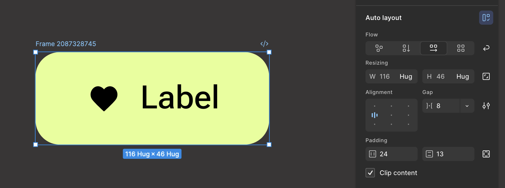
Соберём вместе типовую кнопку:
- Иконка + текстовый слой на холсте.
- Выделяем оба → Shift+A.
- Направление — Horizontal, выравнивание — по центру.
- Padding — например, 24 сверху/снизу, 12 слева/справа.
- Gap между иконкой и текстом — 8px.
- Ширина фрейма — Hug contents (кнопка ровно по контенту).
- Меняем текст на более длинный — кнопка сама расширяется, иконка остаётся на месте.
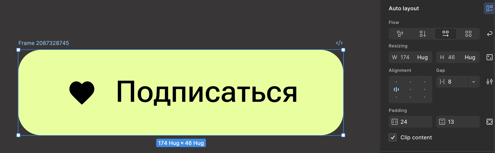
Теперь надеюсь понятно, зачем вообще нужен автолейаут — один раз настроил структуру, и дальше макет «живёт сам», не надо руками двигать пиксели.
Итог урока
Автолейаут — это, без преувеличения, инструмент, который экономит больше всего времени. Сегодня разобрали направление, отступы, выравнивание и три режима размера — Hug/Fill/Fixed. В следующих двух уроках соберём из всего этого настоящие переиспользуемые компоненты.
Домашнее задание:
- Собрать кнопку с иконкой по инструкции из раздела 8.
- Собрать вертикальную карточку (картинка-заглушка + заголовок + описание) с вложенным горизонтальным автолейаутом внутри.
- Проверить карточку на коротком и на очень длинном тексте — макет не должен ломаться.
Полезные материалы
- Гайд по автолейаутам в Фигме (Илья в Tilda Education)
- Auto Layout: как новичку полюбить один из самых сложных параметров Figma (Яндекс Практикум)
- Auto Layout, фреймы и компоненты для быстрой и точной вёрстки в Фигме (Emailmatrix)
- Тренажер Auto Layout (Роман Горелик)